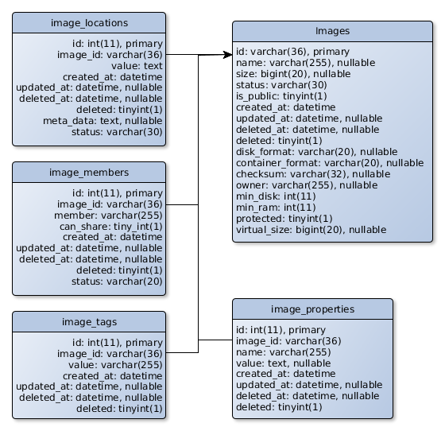

Glance数据库架构¶
Glance数据库公共API¶
Glance数据库API包含几个方法来初级给持久存储发送和接受的消息。在下面你可以找到一个列表按目录划分了公共方法。
镜像方法通用参数¶
- 以下的参数可以用在下面所有的镜像方法中：
context对应glance.context.RequestContext对象的一个值，它存储了用户如何访问系统的信息和请求的额外信息；image_id— 对应镜像标识（identifier）的一个字符串；memb_id— 对应镜像的成员（member）标识的一个字符串。
镜像基本方法¶
镜像处理方法：
image_create(context, values)- 使用 values 字典（Dictionary）的参数创建一个新的镜像记录。返回一个 glance.db.sqlalchemy.models.Image 对象的字典表达式（Dictionary Representation）。image_update(context, image_id, values, purge_props=False, from_state=None)- updates the existing image with an identifier image_id with values listed in the values dictionary. Returns a dictionary representation of a newly created Image object.
- 可选参数有：
purge_props- a flag indicating that all the existing properties not listed in the values[‘properties’] should be deleted;from_state- a string filter indicating that the updated image must be in the specified state.
image_destroy(context, image_id)- deletes all the database record of an image with an identifier image_id, like tags, properties, and members, and sets a ‘deleted’ status to all the image locations.image_get(context, image_id, force_show_deleted=False)- gets an image with an identifier image_id and returns its dictionary representation. A parameter force_show_deleted is a flag that indicates to show image info even if it was ‘deleted’, or its ‘pending_delete’ statuses.image_get_all(context, filters=None, marker=None, limit=None, sort_key=None, sort_dir=None, member_status='accepted', is_public=None, admin_as_user=False, return_tag=False)- gets all the images that match zero or more filters.
- 可选参数有：
filters- dict of filter keys and values. If a ‘properties’ key is present, it is treated as a dict of key/value filters in the attribute of the image properties.marker- image id after which a page should start;limit- maximum number of images to return;sort_key- list of image attributes by which results should be sorted;sort_dir- directions in which results should be sorted (asc, desc);member_status- only returns shared images that have this membership status;is_public- if true, returns only public images. If false, returns only private and shared images.admin_as_user- for backwards compatibility. If true, admin receives an equivalent set of images that he would see if he was a regular user.return_tag- indicates whether an image entry in the result includes its relevant tag entries. This can improve upper-layer query performance and prevent using separated calls.
镜像位置方法¶
镜像位置处理方法：
image_location_add(context, image_id, location)- adds a new location to an image with an identifier image_id. This location contains values listed in the dictionary location.image_location_update(context, image_id, location)- updates an existing location with an identifier location[‘id’] for an image with an identifier image_id with values listed in the dictionary location.image_location_delete(context, image_id, location_id, status, delete_time=None)- sets a ‘deleted’ or ‘pending_delete’ status to an existing location record with an identifier location_id for an image with an identifier image_id.
镜像属性方法¶
所以如果你想修改它，你必须先删除它然后重新创建新的。
镜像属性处理方法：
image_property_create(context, values)- creates a property record with parameters listed in the values dictionary for an image with values[‘id’]. Returns a dictionary representation of a newly created ImageProperty object.image_property_delete(context, prop_ref, image_ref)- deletes an existing property record with a name prop_ref for an image with an identifier image_ref.
镜像成员方法¶
处理镜像成员关系方法：
image_member_create(context, values)- creates a member record with properties listed in the values dictionary for an image with values[‘id’]. Returns a dictionary representation of a newly created ImageMember object.image_member_update(context, memb_id, values)- updates an existing member record with properties listed in the values dictionary for an image with values[‘id’]. Returns a dictionary representation of an updated member record.image_member_delete(context, memb_id)- deletes an existing member record with memb_id.image_member_find(context, image_id=None, member=None, status=None)- returns all members for a given context with optional image identifier (image_id), member name (member), and member status (status) parameters.image_member_count(context, image_id)- returns a number of image members for an image with image_id.
镜像标签（Tag）方法¶
处理镜像标签方法：
image_tag_set_all(context, image_id, tags)- changes all the existing tags for an image with image_id to the tags listed in the tags param. To remove all tags, a user just should provide an empty list.image_tag_create(context, image_id, value)- adds a value to tags for an image with image_id. Returns the value of a newly created tag.image_tag_delete(context, image_id, value)- removes a value from tags for an image with image_id.image_tag_get_all(context, image_id)- returns a list of tags for a specific image.
镜像信息方法¶
下面两个方法告诉用户他修改和查看镜像的能力。这里的*image*参数是*Image*对象的字典表达式（Dictionary Representation）。
is_image_mutable(context, image)- informs a user about the possibility to modify an image with a given context. Returns True if the image is mutable in this context.is_image_visible(context, image, status=None)- informs about the possibility to observe the image details with a given context and optionally with a status. Returns True if the image is visible in this context.
Glance数据库Schema

| figwidth: | 100% :align: center
|
|---|
Image 1. Glance镜像数据库Schema